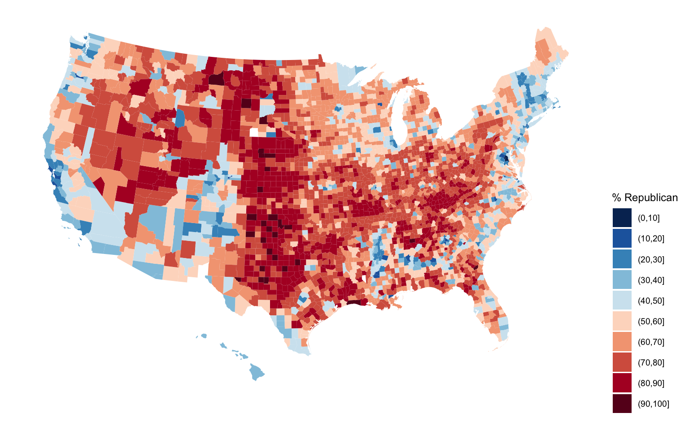

Wrangling
- Explore the following wrangling verbs:
select,mutate,filter,arrange,summarize,group_by - Use the native pipe operator
|>
For more information about the topics covered in this chapter, refer to the resources below:
- Intro to dplyr (YouTube) by Lisa Lendway
- Demonstration of dplyr (YouTube) by Lisa Lendway
- Data Transformation (html) by Wickham, Çetinkaya-Rundel, & Grolemund
- A Grammar for Data Wrangling (html) by Baumer, Kaplan, and Horton
11.1 Motivation
Recall the elections data by U.S. county:
We’ve used data viz to explore some general patterns in the election outcomes. For example, a map!
# Get a background map
library(socviz)
data(county_map)
# Make a choropleth map
library(RColorBrewer) # For the color scale
library(ggthemes) # For theme_map
elections |>
mutate(county_fips = as.character(county_fips)) |>
mutate(county_fips =
ifelse(nchar(county_fips) == 4, paste0("0", county_fips), county_fips)) |>
ggplot(aes(map_id = county_fips, fill = cut(repub_pct_20, breaks = seq(0, 100, by = 10)))) +
geom_map(map = county_map) +
scale_fill_manual(values = rev(brewer.pal(10, "RdBu")), name = "% Republican") +
expand_limits(x = county_map$long, y = county_map$lat) +
theme_map() +
theme(legend.position = "right") +
coord_equal()
Consider some fairly basic follow-up questions, each of which we cannot answer precisely (or sometimes even at all) using our data viz tools:
- How many total people voted for the Democratic and Republican candidates in 2020?
- What about in each state?
- In just the state of Minnesota:
- Which counties had the highest and lowest Democratic vote in 2020?
- How did the Democratic vote in each county change from 2016 to 2020?
11.2 Goals
We really cannot do anything with data (viz, modeling, etc) unless we can wrangle the data. The following is a typical quote. I agree with the 90% – data wrangling isn’t something we have to do before we can do data science, it is data science! But let’s rethink the 10% – data wrangling is a fun and empowering puzzle!

The goals of data wrangling are to explore how to:
- Get data into the tidy shape / format we need for analysis. For example, we might want to:
- keep only certain observations
- define new variables
- reformat or “clean” existing variables
- combine various datasets
- process “string” or text data
- Numerically (not just visually) explore and summarize various characteristics of the variables in our dataset.
11.3 Tools
We’ll continue to use packages that are part of the tidyverse which share a common general grammar and structure.

11.4 Warm-Up
There are lots and lots of steps that can go into data wrangling, thus lots and lots of relevant R functions. BUT just 6 functions can get us very far. People refer to these as the 6 main wrangling verbs or functions:
- why “verbs”? in the
tidyversegrammar, functions serve as action words - the 6 verbs are all stored in the
dplyrpackage within thetidyverse - each verb acts on a data frame and returns a data frame
| verb | action |
|---|---|
arrange |
arrange the rows according to some column |
filter |
filter out or obtain a subset of the rows |
select |
select a subset of columns |
mutate |
mutate or create a column |
summarize |
calculate a numerical summary of a column |
group_by |
group the rows by a specified column |
11.4.1 Example 1
Which verb would help us…
keep only information about state names, county names, and the 2020 and 2016 Democratic support (not the 2012 results, demographics, etc)
get only the data on Minnesota
define a new variable which calculates the change in Democratic support from 2016 to 2020, using
dem_pct_20anddem_pct_16sort the counties from highest to lowest Democratic support
determine the total number of votes cast across all counties
11.4.2 Example 2: Select Columns
To get a sense for the code structure, let’s explore a couple verbs together. To start, let’s simplify our dataset to include only some variables of interest. Specifically, select() only the columns relevant to state names, county names, and the 2020 and 2016 Democratic support:
Let’s re-do this with the pipe function |>:
|>
|> “passes” objects, usually datasets, to a function:
object |> function() is the same as function(object)
11.4.3 Example 3: Filter Rows
Let’s filter() out only the rows related to Minnesota (MN):
11.4.4 Example 4: Filter and Select
Let’s combine select() and filter() to create a new dataset with info about the county names, and 2020 and 2016 Democratic support among Minnesota counties.
Why will we typically use:
- tidyverse code
- the pipe function
|> - each verb on a new row
11.4.5 Example 5: Order of Operations
Sometimes, the order of operations matters, eg, putting on socks then shoes produces a different result than putting on shoes then socks. However, sometimes order doesn’t matter, eg, pouring cereal into a bowl then adding milk produces the same result as pouring milk into a bow then adding cereal (though one order is obviously better than the other ;)) Above (also copied below), we selected some columns and then filtered some rows:
Would we get the same result if we reversed select() and filter()? Think first, then try it.
11.4.6 Example 6: Storing Results
Typically:
- We want to store our data wrangling results.
- It’s good practice to do so under a new name. We want to preserve, thus don’t want to overwrite, the original data (especially if our code contains errors!!).
# Store the results
mn <- elections |>
select(state_name, county_name, dem_pct_20, dem_pct_16) |>
filter(state_name == "Minnesota")
# Always check it out to confirm it's what you want it to be!
head(mn) state_name county_name dem_pct_20 dem_pct_16
1 Minnesota Aitkin County 35.98 34.12
2 Minnesota Anoka County 47.79 41.01
3 Minnesota Becker County 33.96 30.47
4 Minnesota Beltrami County 47.24 40.76
5 Minnesota Benton County 32.70 28.33
6 Minnesota Big Stone County 35.41 33.75[1] 87[1] 310911.5 Exercises
Exercise 1: select Practice
Use select() to create a simplified dataset that we’ll use throughout the exercises below.
- Store this dataset as
elections_small. - Only keep the following variables:
state_name,county_name,total_votes_20,repub_pct_20,dem_pct_20,total_votes_16,dem_pct_16
# Define elections_small
elections_small <- elections |>
select(state_name, county_name, total_votes_20, repub_pct_20, dem_pct_20, total_votes_16, dem_pct_16)
# Check out the first 6 rows to confirm your code did what you think it did!
head(elections_small) state_name county_name total_votes_20 repub_pct_20 dem_pct_20
1 Alabama Autauga County 27770 71.44 27.02
2 Alabama Baldwin County 109679 76.17 22.41
3 Alabama Barbour County 10518 53.45 45.79
4 Alabama Bibb County 9595 78.43 20.70
5 Alabama Blount County 27588 89.57 9.57
6 Alabama Bullock County 4613 24.84 74.70
total_votes_16 dem_pct_16
1 24661 23.96
2 94090 19.57
3 10390 46.66
4 8748 21.42
5 25384 8.47
6 4701 75.09Exercise 2: filter Demo
Whereas select() selects certain variables or columns, filter() keeps certain units of observation or rows relative to their outcome on certain variables. To this end, we must:
Identify the variable(s) that are relevant to the filter.
-
Use a “logical comparison operator” to define which values of the variable to keep:
symbol meaning ==equal to !=not equal to >greater than >=greater than or equal to <less than <=less than or equal to %in% c(???, ???)a list of multiple values Use quotes
""when specifying outcomes of interest for a categorical variable.
To comment/uncomment several lines of code at once, highlight them then click ctrl/cmd+shift+c.
state_name county_name total_votes_20 repub_pct_20 dem_pct_20
1 Hawaii Hawaii County 87814 30.63 66.88
2 Hawaii Honolulu County 382114 35.66 62.51
3 Hawaii Kauai County 33497 34.58 63.36
4 Hawaii Maui County 71044 31.14 66.59
total_votes_16 dem_pct_16
1 64865 63.61
2 285683 61.48
3 26335 62.49
4 51942 64.45 state_name county_name total_votes_20 repub_pct_20 dem_pct_20
1 Delaware Kent County 87025 47.12 51.19
2 Delaware New Castle County 287633 30.72 67.81
3 Delaware Sussex County 129352 55.07 43.82
4 Hawaii Hawaii County 87814 30.63 66.88
5 Hawaii Honolulu County 382114 35.66 62.51
6 Hawaii Kauai County 33497 34.58 63.36
7 Hawaii Maui County 71044 31.14 66.59
total_votes_16 dem_pct_16
1 74253 44.91
2 261468 62.30
3 105814 37.17
4 64865 63.61
5 285683 61.48
6 26335 62.49
7 51942 64.45# Keep only data on counties where the Republican got MORE THAN 93.97% of the vote in 2020
# THINK: What variable is relevant here?
elections_small |>
filter(repub_pct_20 > 93.97) state_name county_name total_votes_20 repub_pct_20 dem_pct_20
1 Texas Borden County 416 95.43 3.85
2 Texas King County 159 94.97 5.03
3 Texas Roberts County 550 96.18 3.09
total_votes_16 dem_pct_16
1 365 8.49
2 159 3.14
3 550 3.64# Keep only data on counties where the Republican got AT LEAST 93.97% of the vote in 2020
# This should have 1 more row (observation) than your answer above
elections_small |>
filter(repub_pct_20 >= 93.97) state_name county_name total_votes_20 repub_pct_20 dem_pct_20
1 Montana Garfield County 813 93.97 5.04
2 Texas Borden County 416 95.43 3.85
3 Texas King County 159 94.97 5.03
4 Texas Roberts County 550 96.18 3.09
total_votes_16 dem_pct_16
1 715 4.76
2 365 8.49
3 159 3.14
4 550 3.64We can also filter with respect to 2 rules! Here, think what variables are relevant.
# Keep only data on counties in Texas where the Democrat got more than 65% of the vote in 2020
# Do this 2 ways.
# Method 1: 2 filters with 1 condition each
elections_small |>
filter(state_name == "Texas") |>
filter(dem_pct_20 < 65) state_name county_name total_votes_20 repub_pct_20 dem_pct_20
1 Texas Anderson County 19227 78.59 20.57
2 Texas Andrews County 5863 84.31 14.50
3 Texas Angelina County 34574 72.53 26.44
4 Texas Aransas County 12290 75.17 23.73
5 Texas Archer County 4796 89.66 9.30
6 Texas Armstrong County 1112 93.08 6.74
7 Texas Atascosa County 18118 66.45 32.43
8 Texas Austin County 14554 78.65 20.28
9 Texas Bailey County 1860 77.10 21.99
10 Texas Bandera County 12715 79.10 19.70
11 Texas Bastrop County 36665 55.96 42.20
12 Texas Baylor County 1702 87.78 10.75
13 Texas Bee County 9420 63.76 34.90
14 Texas Bell County 127375 53.30 44.76
15 Texas Bexar County 768952 40.13 58.32
16 Texas Blanco County 7441 73.15 25.68
17 Texas Borden County 416 95.43 3.85
18 Texas Bosque County 9126 81.84 17.10
19 Texas Bowie County 38261 70.87 28.09
20 Texas Brazoria County 154984 58.35 40.15
21 Texas Brazos County 85061 55.88 41.56
22 Texas Brewster County 4822 51.04 46.83
23 Texas Briscoe County 725 88.14 10.76
24 Texas Brooks County 2484 40.18 59.18
25 Texas Brown County 15969 85.78 13.19
26 Texas Burleson County 8609 78.33 20.77
27 Texas Burnet County 24717 75.93 22.81
28 Texas Caldwell County 14973 53.64 44.56
29 Texas Calhoun County 7856 71.80 27.34
30 Texas Callahan County 6832 88.00 10.74
31 Texas Cameron County 114174 42.94 56.11
32 Texas Camp County 5060 71.66 27.55
33 Texas Carson County 3122 89.01 9.51
34 Texas Cass County 13927 79.22 20.07
35 Texas Castro County 2083 76.91 22.37
36 Texas Chambers County 21652 80.15 18.46
37 Texas Cherokee County 19508 77.41 21.58
38 Texas Childress County 2279 85.26 13.60
39 Texas Clay County 5741 88.29 10.70
40 Texas Cochran County 1000 80.90 17.70
41 Texas Coke County 1779 89.15 10.01
42 Texas Coleman County 4124 88.29 10.94
43 Texas Collin County 492216 51.26 46.92
44 Texas Collingsworth County 1218 86.04 12.73
45 Texas Colorado County 9975 74.91 24.26
46 Texas Comal County 88863 70.60 27.94
47 Texas Comanche County 6086 85.06 14.02
48 Texas Concho County 1268 83.44 15.54
49 Texas Cooke County 18988 82.14 16.91
50 Texas Coryell County 23490 65.72 32.21
51 Texas Cottle County 662 81.57 17.07
52 Texas Crane County 1503 82.97 16.03
53 Texas Crockett County 1574 77.51 21.86
54 Texas Crosby County 1953 71.48 26.98
55 Texas Culberson County 864 48.03 50.69
56 Texas Dallam County 1609 86.33 12.24
57 Texas Dallas County 921638 33.32 64.95
58 Texas Dawson County 3789 77.88 21.32
59 Texas Deaf Smith County 4610 71.45 27.42
60 Texas Delta County 2592 83.41 15.55
61 Texas Denton County 417964 53.23 45.15
62 Texas DeWitt County 8118 80.89 18.40
63 Texas Dickens County 988 86.34 13.16
64 Texas Dimmit County 3666 37.75 61.76
65 Texas Donley County 1648 87.26 12.01
66 Texas Duval County 5053 48.35 50.96
67 Texas Eastland County 8292 87.28 11.85
68 Texas Ector County 44581 73.34 25.50
69 Texas Edwards County 1066 83.77 15.76
70 Texas Ellis County 85493 66.34 32.24
71 Texas Erath County 16853 81.20 17.30
72 Texas Falls County 6133 68.11 30.96
73 Texas Fannin County 15004 81.12 17.70
74 Texas Fayette County 12941 78.60 20.56
75 Texas Fisher County 1826 79.30 19.28
76 Texas Floyd County 2039 77.69 21.48
77 Texas Foard County 551 80.76 17.97
78 Texas Fort Bend County 357514 44.12 54.70
79 Texas Franklin County 5009 83.07 16.05
80 Texas Freestone County 8711 80.25 18.77
81 Texas Frio County 5279 53.48 45.88
82 Texas Gaines County 5995 89.32 9.61
83 Texas Galveston County 155060 60.56 37.95
84 Texas Garza County 1653 85.48 13.97
85 Texas Gillespie County 15846 78.97 20.04
86 Texas Glasscock County 653 93.57 5.97
87 Texas Goliad County 3988 77.36 21.99
88 Texas Gonzales County 7647 73.58 25.47
89 Texas Gray County 7782 87.90 10.65
90 Texas Grayson County 59439 74.30 24.40
91 Texas Gregg County 47982 67.72 30.84
92 Texas Grimes County 12413 75.98 22.82
93 Texas Guadalupe County 77592 61.29 37.12
94 Texas Hale County 9584 74.89 23.78
95 Texas Hall County 1168 85.19 14.38
96 Texas Hamilton County 4349 83.15 14.74
97 Texas Hansford County 2047 90.33 8.11
98 Texas Hardeman County 1580 84.18 15.25
99 Texas Hardin County 27635 86.33 12.57
100 Texas Harris County 1640818 42.70 55.96
101 Texas Harrison County 29710 72.25 26.62
102 Texas Hartley County 2078 89.89 9.38
103 Texas Haskell County 2214 83.11 15.94
104 Texas Hays County 109357 43.60 54.43
105 Texas Hemphill County 1720 86.40 11.98
106 Texas Henderson County 36310 79.62 19.44
107 Texas Hidalgo County 220884 40.98 58.04
108 Texas Hill County 14931 79.87 19.15
109 Texas Hockley County 8095 80.74 18.31
110 Texas Hood County 32541 81.42 17.36
111 Texas Hopkins County 15939 79.80 19.11
112 Texas Houston County 9437 74.81 24.52
113 Texas Howard County 10240 78.65 20.21
114 Texas Hudspeth County 1165 66.87 31.85
115 Texas Hunt County 38574 75.60 23.09
116 Texas Hutchinson County 8771 87.57 11.00
117 Texas Irion County 889 85.38 13.50
118 Texas Jack County 3782 90.38 8.75
119 Texas Jackson County 6340 82.51 16.29
120 Texas Jasper County 15608 80.36 18.93
121 Texas Jeff Davis County 1305 60.08 38.39
122 Texas Jefferson County 94739 50.21 48.63
123 Texas Jim Hogg County 2036 40.91 58.79
124 Texas Jim Wells County 13669 54.52 44.77
125 Texas Johnson County 72005 75.87 22.87
126 Texas Jones County 6741 83.96 14.82
127 Texas Karnes County 5249 75.60 23.51
128 Texas Kaufman County 56703 66.35 32.46
129 Texas Kendall County 26438 75.96 22.77
130 Texas Kenedy County 194 65.46 33.51
131 Texas Kent County 462 88.96 10.17
132 Texas Kerr County 27745 75.25 23.51
133 Texas Kimble County 2292 86.69 12.39
134 Texas King County 159 94.97 5.03
135 Texas Kinney County 1603 71.37 27.82
136 Texas Kleberg County 10944 50.29 48.56
137 Texas Knox County 1456 81.04 18.20
138 Texas Lamar County 21418 78.25 20.81
139 Texas Lamb County 4408 79.88 19.06
140 Texas Lampasas County 10399 77.76 20.62
141 Texas La Salle County 2406 55.49 43.72
142 Texas Lavaca County 10197 86.34 13.07
143 Texas Lee County 8086 77.36 21.64
144 Texas Leon County 8674 86.73 12.36
145 Texas Liberty County 29334 79.44 19.72
146 Texas Limestone County 9095 74.65 24.33
147 Texas Lipscomb County 1353 89.06 9.68
148 Texas Live Oak County 5054 83.08 16.20
149 Texas Llano County 12660 79.61 19.47
150 Texas Loving County 66 90.91 6.06
151 Texas Lubbock County 120771 65.30 33.13
152 Texas Lynn County 2293 80.81 18.67
153 Texas McCulloch County 3436 84.52 14.26
154 Texas McLennan County 97771 60.90 37.52
155 Texas McMullen County 516 89.15 10.27
156 Texas Madison County 5297 78.70 20.54
157 Texas Marion County 4864 71.34 27.53
158 Texas Martin County 2160 85.97 13.33
159 Texas Mason County 2474 80.48 18.47
160 Texas Matagorda County 13726 71.73 27.20
161 Texas Maverick County 15346 44.84 54.29
162 Texas Medina County 22644 69.08 29.91
163 Texas Menard County 1028 80.06 19.16
164 Texas Midland County 58856 77.52 20.95
165 Texas Milam County 10576 75.49 23.60
166 Texas Mills County 2505 88.50 10.82
167 Texas Mitchell County 2579 84.14 15.39
168 Texas Montague County 9814 87.78 11.18
169 Texas Montgomery County 271451 71.24 27.40
170 Texas Moore County 5508 79.14 19.28
171 Texas Morris County 5587 69.30 29.87
172 Texas Motley County 652 92.64 7.06
173 Texas Nacogdoches County 26763 64.93 33.63
174 Texas Navarro County 19121 72.17 26.68
175 Texas Newton County 6094 80.11 19.25
176 Texas Nolan County 5356 77.13 21.70
177 Texas Nueces County 127314 50.75 47.85
178 Texas Ochiltree County 3156 89.10 9.57
179 Texas Oldham County 1009 90.88 8.03
180 Texas Orange County 35994 81.09 17.66
181 Texas Palo Pinto County 12485 81.53 17.44
182 Texas Panola County 11451 81.44 17.96
183 Texas Parker County 76128 81.50 17.10
184 Texas Parmer County 2650 80.57 18.42
185 Texas Pecos County 4668 68.87 29.61
186 Texas Polk County 24181 76.81 22.28
187 Texas Potter County 33321 68.49 29.77
188 Texas Rains County 6053 85.16 13.91
189 Texas Randall County 64674 78.54 19.79
190 Texas Reagan County 1124 83.81 15.30
191 Texas Real County 1982 82.90 16.15
192 Texas Red River County 5806 77.80 21.46
193 Texas Reeves County 3687 61.13 37.84
194 Texas Refugio County 3366 65.66 32.92
195 Texas Roberts County 550 96.18 3.09
196 Texas Robertson County 8099 69.71 29.31
197 Texas Rockwall County 53891 68.15 30.45
198 Texas Runnels County 4409 86.35 12.52
199 Texas Rusk County 21368 77.38 21.66
200 Texas Sabine County 5487 87.19 12.19
201 Texas San Augustine County 4002 75.14 24.49
202 Texas San Jacinto County 12638 80.40 18.49
203 Texas San Patricio County 25888 63.80 34.72
204 Texas San Saba County 2602 88.70 11.03
205 Texas Schleicher County 1159 81.10 18.21
206 Texas Scurry County 5869 84.90 13.94
207 Texas Shackelford County 1628 91.15 7.99
208 Texas Shelby County 10084 79.09 20.51
209 Texas Sherman County 991 89.40 9.18
210 Texas Smith County 100075 69.03 29.59
211 Texas Somervell County 4947 82.98 15.52
212 Texas Starr County 17525 47.06 52.06
213 Texas Stephens County 3800 89.08 10.45
214 Texas Sterling County 639 91.39 7.98
215 Texas Stonewall County 736 83.56 15.76
216 Texas Sutton County 1557 78.48 20.68
217 Texas Swisher County 2355 78.34 20.30
218 Texas Tarrant County 834697 49.09 49.31
219 Texas Taylor County 55112 71.76 26.47
220 Texas Terrell County 458 72.93 25.98
221 Texas Terry County 3612 77.85 20.96
222 Texas Throckmorton County 899 89.66 9.12
223 Texas Titus County 10539 71.83 27.10
224 Texas Tom Green County 45210 71.47 27.07
225 Texas Trinity County 6938 80.41 19.07
226 Texas Tyler County 9660 84.82 14.52
227 Texas Upshur County 18887 83.70 15.23
228 Texas Upton County 1368 86.11 12.43
229 Texas Uvalde County 10342 59.70 39.38
230 Texas Val Verde County 15272 54.24 44.34
231 Texas Van Zandt County 25994 85.67 13.53
232 Texas Victoria County 34188 68.32 30.36
233 Texas Walker County 23612 65.12 33.39
234 Texas Waller County 22734 62.73 36.03
235 Texas Ward County 4060 79.83 18.82
236 Texas Washington County 17418 74.40 24.46
237 Texas Webb County 68397 37.86 61.14
238 Texas Wharton County 16761 71.15 28.01
239 Texas Wheeler County 2337 92.38 7.19
240 Texas Wichita County 46030 69.67 28.59
241 Texas Wilbarger County 4524 77.90 21.13
242 Texas Willacy County 5549 43.99 56.01
243 Texas Williamson County 289312 48.30 49.70
244 Texas Wilson County 25013 73.81 25.39
245 Texas Winkler County 2126 82.46 16.84
246 Texas Wise County 32362 83.53 15.37
247 Texas Wood County 22779 83.63 15.40
248 Texas Yoakum County 2631 82.63 15.96
249 Texas Young County 8239 86.30 12.55
250 Texas Zapata County 3874 52.48 47.13
total_votes_16 dem_pct_16
1 16887 19.89
2 4926 16.97
3 29870 25.24
4 10467 23.48
5 4269 9.23
6 1017 6.88
7 13605 34.07
8 12255 18.92
9 1784 22.25
10 10213 16.90
11 28250 37.36
12 1492 12.80
13 8458 40.71
14 93999 40.01
15 586038 54.47
16 5669 21.94
17 365 8.49
18 7797 16.38
19 34470 25.62
20 120296 35.81
21 66036 34.89
22 4226 44.23
23 734 12.40
24 2596 74.61
25 13949 11.62
26 6945 21.47
27 19046 19.87
28 11709 39.82
29 6957 30.44
30 5556 10.22
31 91804 64.61
32 4542 27.74
33 2945 8.46
34 11606 19.39
35 1996 26.35
36 16661 17.64
37 16701 20.75
38 2084 12.14
39 5011 10.70
40 901 21.09
41 1423 9.84
42 3635 10.65
43 356545 39.22
44 1154 12.56
45 8480 23.31
46 61567 23.01
47 5208 15.13
48 1067 13.87
49 15894 14.75
50 18127 27.90
51 583 14.41
52 1381 21.65
53 1395 26.67
54 1712 27.34
55 762 59.58
56 1535 14.46
57 750649 61.13
58 3562 23.44
59 4201 28.21
60 2279 17.55
61 293287 37.51
62 6822 17.02
63 909 14.08
64 3225 67.38
65 1460 13.01
66 4159 66.92
67 6935 11.19
68 36373 28.11
69 1065 28.36
70 63064 25.68
71 13810 15.63
72 5232 32.15
73 11972 17.73
74 11029 19.29
75 1722 23.40
76 1958 22.22
77 511 22.11
78 260367 51.65
79 4356 15.27
80 7608 19.20
81 2683 52.22
82 4609 12.95
83 123994 36.70
84 1475 15.19
85 13123 17.42
86 602 5.65
87 3713 26.21
88 6304 24.86
89 7360 9.50
90 47068 21.83
91 41365 28.10
92 9528 23.03
93 57220 32.00
94 8802 23.74
95 1089 15.06
96 3609 13.27
97 1947 8.78
98 1511 16.48
99 22768 12.21
100 1302887 54.22
101 26364 27.04
102 1945 8.84
103 1765 17.79
104 71524 46.30
105 1687 10.73
106 29855 18.92
107 172990 68.64
108 12906 19.64
109 7282 17.26
110 26120 15.32
111 13476 18.61
112 8302 23.83
113 8692 20.34
114 871 37.20
115 31185 20.21
116 8126 10.51
117 760 11.84
118 3339 9.40
119 5275 17.14
120 13351 19.34
121 1175 35.91
122 87363 48.54
123 2119 77.16
124 12346 54.17
125 57270 19.17
126 5932 15.76
127 4185 27.34
128 40979 25.05
129 19936 18.22
130 186 53.23
131 433 13.63
132 23090 20.20
133 1945 10.59
134 159 3.14
135 1424 32.09
136 9483 49.70
137 1358 18.19
138 18537 19.31
139 3905 19.72
140 8149 18.15
141 2049 54.90
142 8633 13.55
143 6522 21.04
144 7407 12.27
145 24155 20.08
146 7648 22.86
147 1322 10.21
148 4267 17.32
149 10377 17.59
150 64 6.25
151 98060 28.51
152 1997 20.18
153 3086 15.55
154 78255 34.56
155 497 8.05
156 4283 20.57
157 4206 27.48
158 1755 15.16
159 2053 17.19
160 11779 28.50
161 13588 76.52
162 17187 26.90
163 860 17.79
164 48753 20.50
165 8607 23.72
166 2238 10.81
167 2190 16.12
168 8604 10.29
169 203083 22.52
170 5262 20.83
171 4964 28.71
172 620 6.45
173 22430 30.41
174 16382 24.40
175 4010 24.39
176 4744 21.69
177 103958 47.23
178 2981 9.19
179 945 8.25
180 31761 18.00
181 10175 16.71
182 10413 17.62
183 56413 14.76
184 2818 30.09
185 4167 37.22
186 34444 20.68
187 28330 26.90
188 4630 13.37
189 53813 15.50
190 900 18.56
191 1678 15.61
192 5147 22.30
193 3184 52.10
194 2945 35.11
195 550 3.64
196 7010 31.43
197 39529 24.37
198 3765 12.01
199 18994 20.72
200 4642 13.23
201 3563 25.46
202 10305 19.74
203 21513 36.37
204 2354 12.45
205 1054 19.83
206 5261 13.93
207 1502 6.86
208 9072 19.37
209 933 10.29
210 83161 26.61
211 3876 13.93
212 11691 79.09
213 3453 10.08
214 633 11.06
215 701 19.26
216 1415 22.12
217 2190 21.10
218 662832 43.45
219 45266 22.20
220 437 32.04
221 1763 24.05
222 808 10.40
223 9176 27.66
224 38104 23.93
225 5982 19.29
226 7969 15.60
227 15918 14.94
228 1296 21.91
229 8936 43.23
230 13476 51.35
231 21689 12.87
232 31032 28.50
233 19683 30.92
234 16715 34.36
235 3413 22.85
236 14747 22.93
237 56867 74.38
238 14707 28.82
239 2306 8.41
240 37913 23.08
241 4101 19.68
242 5082 67.22
243 200524 42.02
244 19255 24.88
245 1873 22.42
246 24661 13.84
247 18646 14.07
248 2299 18.53
249 7658 11.40
250 3134 65.60# Method 2: 1 filter with 2 conditions
elections_small |>
filter(state_name == "Texas", dem_pct_20 < 65) state_name county_name total_votes_20 repub_pct_20 dem_pct_20
1 Texas Anderson County 19227 78.59 20.57
2 Texas Andrews County 5863 84.31 14.50
3 Texas Angelina County 34574 72.53 26.44
4 Texas Aransas County 12290 75.17 23.73
5 Texas Archer County 4796 89.66 9.30
6 Texas Armstrong County 1112 93.08 6.74
7 Texas Atascosa County 18118 66.45 32.43
8 Texas Austin County 14554 78.65 20.28
9 Texas Bailey County 1860 77.10 21.99
10 Texas Bandera County 12715 79.10 19.70
11 Texas Bastrop County 36665 55.96 42.20
12 Texas Baylor County 1702 87.78 10.75
13 Texas Bee County 9420 63.76 34.90
14 Texas Bell County 127375 53.30 44.76
15 Texas Bexar County 768952 40.13 58.32
16 Texas Blanco County 7441 73.15 25.68
17 Texas Borden County 416 95.43 3.85
18 Texas Bosque County 9126 81.84 17.10
19 Texas Bowie County 38261 70.87 28.09
20 Texas Brazoria County 154984 58.35 40.15
21 Texas Brazos County 85061 55.88 41.56
22 Texas Brewster County 4822 51.04 46.83
23 Texas Briscoe County 725 88.14 10.76
24 Texas Brooks County 2484 40.18 59.18
25 Texas Brown County 15969 85.78 13.19
26 Texas Burleson County 8609 78.33 20.77
27 Texas Burnet County 24717 75.93 22.81
28 Texas Caldwell County 14973 53.64 44.56
29 Texas Calhoun County 7856 71.80 27.34
30 Texas Callahan County 6832 88.00 10.74
31 Texas Cameron County 114174 42.94 56.11
32 Texas Camp County 5060 71.66 27.55
33 Texas Carson County 3122 89.01 9.51
34 Texas Cass County 13927 79.22 20.07
35 Texas Castro County 2083 76.91 22.37
36 Texas Chambers County 21652 80.15 18.46
37 Texas Cherokee County 19508 77.41 21.58
38 Texas Childress County 2279 85.26 13.60
39 Texas Clay County 5741 88.29 10.70
40 Texas Cochran County 1000 80.90 17.70
41 Texas Coke County 1779 89.15 10.01
42 Texas Coleman County 4124 88.29 10.94
43 Texas Collin County 492216 51.26 46.92
44 Texas Collingsworth County 1218 86.04 12.73
45 Texas Colorado County 9975 74.91 24.26
46 Texas Comal County 88863 70.60 27.94
47 Texas Comanche County 6086 85.06 14.02
48 Texas Concho County 1268 83.44 15.54
49 Texas Cooke County 18988 82.14 16.91
50 Texas Coryell County 23490 65.72 32.21
51 Texas Cottle County 662 81.57 17.07
52 Texas Crane County 1503 82.97 16.03
53 Texas Crockett County 1574 77.51 21.86
54 Texas Crosby County 1953 71.48 26.98
55 Texas Culberson County 864 48.03 50.69
56 Texas Dallam County 1609 86.33 12.24
57 Texas Dallas County 921638 33.32 64.95
58 Texas Dawson County 3789 77.88 21.32
59 Texas Deaf Smith County 4610 71.45 27.42
60 Texas Delta County 2592 83.41 15.55
61 Texas Denton County 417964 53.23 45.15
62 Texas DeWitt County 8118 80.89 18.40
63 Texas Dickens County 988 86.34 13.16
64 Texas Dimmit County 3666 37.75 61.76
65 Texas Donley County 1648 87.26 12.01
66 Texas Duval County 5053 48.35 50.96
67 Texas Eastland County 8292 87.28 11.85
68 Texas Ector County 44581 73.34 25.50
69 Texas Edwards County 1066 83.77 15.76
70 Texas Ellis County 85493 66.34 32.24
71 Texas Erath County 16853 81.20 17.30
72 Texas Falls County 6133 68.11 30.96
73 Texas Fannin County 15004 81.12 17.70
74 Texas Fayette County 12941 78.60 20.56
75 Texas Fisher County 1826 79.30 19.28
76 Texas Floyd County 2039 77.69 21.48
77 Texas Foard County 551 80.76 17.97
78 Texas Fort Bend County 357514 44.12 54.70
79 Texas Franklin County 5009 83.07 16.05
80 Texas Freestone County 8711 80.25 18.77
81 Texas Frio County 5279 53.48 45.88
82 Texas Gaines County 5995 89.32 9.61
83 Texas Galveston County 155060 60.56 37.95
84 Texas Garza County 1653 85.48 13.97
85 Texas Gillespie County 15846 78.97 20.04
86 Texas Glasscock County 653 93.57 5.97
87 Texas Goliad County 3988 77.36 21.99
88 Texas Gonzales County 7647 73.58 25.47
89 Texas Gray County 7782 87.90 10.65
90 Texas Grayson County 59439 74.30 24.40
91 Texas Gregg County 47982 67.72 30.84
92 Texas Grimes County 12413 75.98 22.82
93 Texas Guadalupe County 77592 61.29 37.12
94 Texas Hale County 9584 74.89 23.78
95 Texas Hall County 1168 85.19 14.38
96 Texas Hamilton County 4349 83.15 14.74
97 Texas Hansford County 2047 90.33 8.11
98 Texas Hardeman County 1580 84.18 15.25
99 Texas Hardin County 27635 86.33 12.57
100 Texas Harris County 1640818 42.70 55.96
101 Texas Harrison County 29710 72.25 26.62
102 Texas Hartley County 2078 89.89 9.38
103 Texas Haskell County 2214 83.11 15.94
104 Texas Hays County 109357 43.60 54.43
105 Texas Hemphill County 1720 86.40 11.98
106 Texas Henderson County 36310 79.62 19.44
107 Texas Hidalgo County 220884 40.98 58.04
108 Texas Hill County 14931 79.87 19.15
109 Texas Hockley County 8095 80.74 18.31
110 Texas Hood County 32541 81.42 17.36
111 Texas Hopkins County 15939 79.80 19.11
112 Texas Houston County 9437 74.81 24.52
113 Texas Howard County 10240 78.65 20.21
114 Texas Hudspeth County 1165 66.87 31.85
115 Texas Hunt County 38574 75.60 23.09
116 Texas Hutchinson County 8771 87.57 11.00
117 Texas Irion County 889 85.38 13.50
118 Texas Jack County 3782 90.38 8.75
119 Texas Jackson County 6340 82.51 16.29
120 Texas Jasper County 15608 80.36 18.93
121 Texas Jeff Davis County 1305 60.08 38.39
122 Texas Jefferson County 94739 50.21 48.63
123 Texas Jim Hogg County 2036 40.91 58.79
124 Texas Jim Wells County 13669 54.52 44.77
125 Texas Johnson County 72005 75.87 22.87
126 Texas Jones County 6741 83.96 14.82
127 Texas Karnes County 5249 75.60 23.51
128 Texas Kaufman County 56703 66.35 32.46
129 Texas Kendall County 26438 75.96 22.77
130 Texas Kenedy County 194 65.46 33.51
131 Texas Kent County 462 88.96 10.17
132 Texas Kerr County 27745 75.25 23.51
133 Texas Kimble County 2292 86.69 12.39
134 Texas King County 159 94.97 5.03
135 Texas Kinney County 1603 71.37 27.82
136 Texas Kleberg County 10944 50.29 48.56
137 Texas Knox County 1456 81.04 18.20
138 Texas Lamar County 21418 78.25 20.81
139 Texas Lamb County 4408 79.88 19.06
140 Texas Lampasas County 10399 77.76 20.62
141 Texas La Salle County 2406 55.49 43.72
142 Texas Lavaca County 10197 86.34 13.07
143 Texas Lee County 8086 77.36 21.64
144 Texas Leon County 8674 86.73 12.36
145 Texas Liberty County 29334 79.44 19.72
146 Texas Limestone County 9095 74.65 24.33
147 Texas Lipscomb County 1353 89.06 9.68
148 Texas Live Oak County 5054 83.08 16.20
149 Texas Llano County 12660 79.61 19.47
150 Texas Loving County 66 90.91 6.06
151 Texas Lubbock County 120771 65.30 33.13
152 Texas Lynn County 2293 80.81 18.67
153 Texas McCulloch County 3436 84.52 14.26
154 Texas McLennan County 97771 60.90 37.52
155 Texas McMullen County 516 89.15 10.27
156 Texas Madison County 5297 78.70 20.54
157 Texas Marion County 4864 71.34 27.53
158 Texas Martin County 2160 85.97 13.33
159 Texas Mason County 2474 80.48 18.47
160 Texas Matagorda County 13726 71.73 27.20
161 Texas Maverick County 15346 44.84 54.29
162 Texas Medina County 22644 69.08 29.91
163 Texas Menard County 1028 80.06 19.16
164 Texas Midland County 58856 77.52 20.95
165 Texas Milam County 10576 75.49 23.60
166 Texas Mills County 2505 88.50 10.82
167 Texas Mitchell County 2579 84.14 15.39
168 Texas Montague County 9814 87.78 11.18
169 Texas Montgomery County 271451 71.24 27.40
170 Texas Moore County 5508 79.14 19.28
171 Texas Morris County 5587 69.30 29.87
172 Texas Motley County 652 92.64 7.06
173 Texas Nacogdoches County 26763 64.93 33.63
174 Texas Navarro County 19121 72.17 26.68
175 Texas Newton County 6094 80.11 19.25
176 Texas Nolan County 5356 77.13 21.70
177 Texas Nueces County 127314 50.75 47.85
178 Texas Ochiltree County 3156 89.10 9.57
179 Texas Oldham County 1009 90.88 8.03
180 Texas Orange County 35994 81.09 17.66
181 Texas Palo Pinto County 12485 81.53 17.44
182 Texas Panola County 11451 81.44 17.96
183 Texas Parker County 76128 81.50 17.10
184 Texas Parmer County 2650 80.57 18.42
185 Texas Pecos County 4668 68.87 29.61
186 Texas Polk County 24181 76.81 22.28
187 Texas Potter County 33321 68.49 29.77
188 Texas Rains County 6053 85.16 13.91
189 Texas Randall County 64674 78.54 19.79
190 Texas Reagan County 1124 83.81 15.30
191 Texas Real County 1982 82.90 16.15
192 Texas Red River County 5806 77.80 21.46
193 Texas Reeves County 3687 61.13 37.84
194 Texas Refugio County 3366 65.66 32.92
195 Texas Roberts County 550 96.18 3.09
196 Texas Robertson County 8099 69.71 29.31
197 Texas Rockwall County 53891 68.15 30.45
198 Texas Runnels County 4409 86.35 12.52
199 Texas Rusk County 21368 77.38 21.66
200 Texas Sabine County 5487 87.19 12.19
201 Texas San Augustine County 4002 75.14 24.49
202 Texas San Jacinto County 12638 80.40 18.49
203 Texas San Patricio County 25888 63.80 34.72
204 Texas San Saba County 2602 88.70 11.03
205 Texas Schleicher County 1159 81.10 18.21
206 Texas Scurry County 5869 84.90 13.94
207 Texas Shackelford County 1628 91.15 7.99
208 Texas Shelby County 10084 79.09 20.51
209 Texas Sherman County 991 89.40 9.18
210 Texas Smith County 100075 69.03 29.59
211 Texas Somervell County 4947 82.98 15.52
212 Texas Starr County 17525 47.06 52.06
213 Texas Stephens County 3800 89.08 10.45
214 Texas Sterling County 639 91.39 7.98
215 Texas Stonewall County 736 83.56 15.76
216 Texas Sutton County 1557 78.48 20.68
217 Texas Swisher County 2355 78.34 20.30
218 Texas Tarrant County 834697 49.09 49.31
219 Texas Taylor County 55112 71.76 26.47
220 Texas Terrell County 458 72.93 25.98
221 Texas Terry County 3612 77.85 20.96
222 Texas Throckmorton County 899 89.66 9.12
223 Texas Titus County 10539 71.83 27.10
224 Texas Tom Green County 45210 71.47 27.07
225 Texas Trinity County 6938 80.41 19.07
226 Texas Tyler County 9660 84.82 14.52
227 Texas Upshur County 18887 83.70 15.23
228 Texas Upton County 1368 86.11 12.43
229 Texas Uvalde County 10342 59.70 39.38
230 Texas Val Verde County 15272 54.24 44.34
231 Texas Van Zandt County 25994 85.67 13.53
232 Texas Victoria County 34188 68.32 30.36
233 Texas Walker County 23612 65.12 33.39
234 Texas Waller County 22734 62.73 36.03
235 Texas Ward County 4060 79.83 18.82
236 Texas Washington County 17418 74.40 24.46
237 Texas Webb County 68397 37.86 61.14
238 Texas Wharton County 16761 71.15 28.01
239 Texas Wheeler County 2337 92.38 7.19
240 Texas Wichita County 46030 69.67 28.59
241 Texas Wilbarger County 4524 77.90 21.13
242 Texas Willacy County 5549 43.99 56.01
243 Texas Williamson County 289312 48.30 49.70
244 Texas Wilson County 25013 73.81 25.39
245 Texas Winkler County 2126 82.46 16.84
246 Texas Wise County 32362 83.53 15.37
247 Texas Wood County 22779 83.63 15.40
248 Texas Yoakum County 2631 82.63 15.96
249 Texas Young County 8239 86.30 12.55
250 Texas Zapata County 3874 52.48 47.13
total_votes_16 dem_pct_16
1 16887 19.89
2 4926 16.97
3 29870 25.24
4 10467 23.48
5 4269 9.23
6 1017 6.88
7 13605 34.07
8 12255 18.92
9 1784 22.25
10 10213 16.90
11 28250 37.36
12 1492 12.80
13 8458 40.71
14 93999 40.01
15 586038 54.47
16 5669 21.94
17 365 8.49
18 7797 16.38
19 34470 25.62
20 120296 35.81
21 66036 34.89
22 4226 44.23
23 734 12.40
24 2596 74.61
25 13949 11.62
26 6945 21.47
27 19046 19.87
28 11709 39.82
29 6957 30.44
30 5556 10.22
31 91804 64.61
32 4542 27.74
33 2945 8.46
34 11606 19.39
35 1996 26.35
36 16661 17.64
37 16701 20.75
38 2084 12.14
39 5011 10.70
40 901 21.09
41 1423 9.84
42 3635 10.65
43 356545 39.22
44 1154 12.56
45 8480 23.31
46 61567 23.01
47 5208 15.13
48 1067 13.87
49 15894 14.75
50 18127 27.90
51 583 14.41
52 1381 21.65
53 1395 26.67
54 1712 27.34
55 762 59.58
56 1535 14.46
57 750649 61.13
58 3562 23.44
59 4201 28.21
60 2279 17.55
61 293287 37.51
62 6822 17.02
63 909 14.08
64 3225 67.38
65 1460 13.01
66 4159 66.92
67 6935 11.19
68 36373 28.11
69 1065 28.36
70 63064 25.68
71 13810 15.63
72 5232 32.15
73 11972 17.73
74 11029 19.29
75 1722 23.40
76 1958 22.22
77 511 22.11
78 260367 51.65
79 4356 15.27
80 7608 19.20
81 2683 52.22
82 4609 12.95
83 123994 36.70
84 1475 15.19
85 13123 17.42
86 602 5.65
87 3713 26.21
88 6304 24.86
89 7360 9.50
90 47068 21.83
91 41365 28.10
92 9528 23.03
93 57220 32.00
94 8802 23.74
95 1089 15.06
96 3609 13.27
97 1947 8.78
98 1511 16.48
99 22768 12.21
100 1302887 54.22
101 26364 27.04
102 1945 8.84
103 1765 17.79
104 71524 46.30
105 1687 10.73
106 29855 18.92
107 172990 68.64
108 12906 19.64
109 7282 17.26
110 26120 15.32
111 13476 18.61
112 8302 23.83
113 8692 20.34
114 871 37.20
115 31185 20.21
116 8126 10.51
117 760 11.84
118 3339 9.40
119 5275 17.14
120 13351 19.34
121 1175 35.91
122 87363 48.54
123 2119 77.16
124 12346 54.17
125 57270 19.17
126 5932 15.76
127 4185 27.34
128 40979 25.05
129 19936 18.22
130 186 53.23
131 433 13.63
132 23090 20.20
133 1945 10.59
134 159 3.14
135 1424 32.09
136 9483 49.70
137 1358 18.19
138 18537 19.31
139 3905 19.72
140 8149 18.15
141 2049 54.90
142 8633 13.55
143 6522 21.04
144 7407 12.27
145 24155 20.08
146 7648 22.86
147 1322 10.21
148 4267 17.32
149 10377 17.59
150 64 6.25
151 98060 28.51
152 1997 20.18
153 3086 15.55
154 78255 34.56
155 497 8.05
156 4283 20.57
157 4206 27.48
158 1755 15.16
159 2053 17.19
160 11779 28.50
161 13588 76.52
162 17187 26.90
163 860 17.79
164 48753 20.50
165 8607 23.72
166 2238 10.81
167 2190 16.12
168 8604 10.29
169 203083 22.52
170 5262 20.83
171 4964 28.71
172 620 6.45
173 22430 30.41
174 16382 24.40
175 4010 24.39
176 4744 21.69
177 103958 47.23
178 2981 9.19
179 945 8.25
180 31761 18.00
181 10175 16.71
182 10413 17.62
183 56413 14.76
184 2818 30.09
185 4167 37.22
186 34444 20.68
187 28330 26.90
188 4630 13.37
189 53813 15.50
190 900 18.56
191 1678 15.61
192 5147 22.30
193 3184 52.10
194 2945 35.11
195 550 3.64
196 7010 31.43
197 39529 24.37
198 3765 12.01
199 18994 20.72
200 4642 13.23
201 3563 25.46
202 10305 19.74
203 21513 36.37
204 2354 12.45
205 1054 19.83
206 5261 13.93
207 1502 6.86
208 9072 19.37
209 933 10.29
210 83161 26.61
211 3876 13.93
212 11691 79.09
213 3453 10.08
214 633 11.06
215 701 19.26
216 1415 22.12
217 2190 21.10
218 662832 43.45
219 45266 22.20
220 437 32.04
221 1763 24.05
222 808 10.40
223 9176 27.66
224 38104 23.93
225 5982 19.29
226 7969 15.60
227 15918 14.94
228 1296 21.91
229 8936 43.23
230 13476 51.35
231 21689 12.87
232 31032 28.50
233 19683 30.92
234 16715 34.36
235 3413 22.85
236 14747 22.93
237 56867 74.38
238 14707 28.82
239 2306 8.41
240 37913 23.08
241 4101 19.68
242 5082 67.22
243 200524 42.02
244 19255 24.88
245 1873 22.42
246 24661 13.84
247 18646 14.07
248 2299 18.53
249 7658 11.40
250 3134 65.60Exercise 3: arrange Demo
arrange() arranges or sorts the rows in a dataset according to a given column or variable, in ascending or descending order:
arrange(variable), arrange(desc(variable))
# Arrange the counties in elections_small from lowest to highest percentage of 2020 Republican support
# Print out just the first 6 rows
elections_small |>
arrange(repub_pct_20) |>
head() state_name county_name total_votes_20 repub_pct_20
1 District of Columbia District of Columbia 344356 5.40
2 Maryland Prince George's County 424855 8.73
3 Maryland Baltimore city 237461 10.69
4 Virginia Petersburg city 14118 11.22
5 New York New York County 694904 12.26
6 California San Francisco County 443458 12.72
dem_pct_20 total_votes_16 dem_pct_16
1 92.15 280272 92.85
2 89.26 351091 89.33
3 87.28 208980 85.44
4 87.75 13717 87.52
5 86.78 591368 87.17
6 85.27 365295 85.53# Arrange the counties in elections_small from highest to lowest percentage of 2020 Republican support
# Print out just the first 6 rows
elections_small |>
arrange(desc(repub_pct_20)) |>
head() state_name county_name total_votes_20 repub_pct_20 dem_pct_20
1 Texas Roberts County 550 96.18 3.09
2 Texas Borden County 416 95.43 3.85
3 Texas King County 159 94.97 5.03
4 Montana Garfield County 813 93.97 5.04
5 Texas Glasscock County 653 93.57 5.97
6 Nebraska Grant County 402 93.28 4.98
total_votes_16 dem_pct_16
1 550 3.64
2 365 8.49
3 159 3.14
4 715 4.76
5 602 5.65
6 394 5.08Exercise 4: mutate Demo
mutate() can either transform / mutate an existing variable (column), or define a new variable based on existing ones.
Part a
state_name county_name total_votes_20 repub_pct_20 dem_pct_20
1 Alabama Autauga County 27770 71.44 27.02
2 Alabama Baldwin County 109679 76.17 22.41
3 Alabama Barbour County 10518 53.45 45.79
4 Alabama Bibb County 9595 78.43 20.70
5 Alabama Blount County 27588 89.57 9.57
6 Alabama Bullock County 4613 24.84 74.70
total_votes_16 dem_pct_16 diff_20
1 24661 23.96 44.42
2 94090 19.57 53.76
3 10390 46.66 7.66
4 8748 21.42 57.73
5 25384 8.47 80.00
6 4701 75.09 -49.86# What did this code do?
elections_small |>
mutate(repub_votes_20 = round(total_votes_20 * repub_pct_20/100)) |>
head() state_name county_name total_votes_20 repub_pct_20 dem_pct_20
1 Alabama Autauga County 27770 71.44 27.02
2 Alabama Baldwin County 109679 76.17 22.41
3 Alabama Barbour County 10518 53.45 45.79
4 Alabama Bibb County 9595 78.43 20.70
5 Alabama Blount County 27588 89.57 9.57
6 Alabama Bullock County 4613 24.84 74.70
total_votes_16 dem_pct_16 repub_votes_20
1 24661 23.96 19839
2 94090 19.57 83542
3 10390 46.66 5622
4 8748 21.42 7525
5 25384 8.47 24711
6 4701 75.09 1146# What did this code do?
elections_small |>
mutate(repub_win_20 = repub_pct_20 > dem_pct_20) |>
head() state_name county_name total_votes_20 repub_pct_20 dem_pct_20
1 Alabama Autauga County 27770 71.44 27.02
2 Alabama Baldwin County 109679 76.17 22.41
3 Alabama Barbour County 10518 53.45 45.79
4 Alabama Bibb County 9595 78.43 20.70
5 Alabama Blount County 27588 89.57 9.57
6 Alabama Bullock County 4613 24.84 74.70
total_votes_16 dem_pct_16 repub_win_20
1 24661 23.96 TRUE
2 94090 19.57 TRUE
3 10390 46.66 TRUE
4 8748 21.42 TRUE
5 25384 8.47 TRUE
6 4701 75.09 FALSEPart b
# You try
# Define a variable that calculates the change in Dem support in 2020 vs 2016
elections_small |>
mutate(diff_dem = dem_pct_20 - dem_pct_16) |>
head() state_name county_name total_votes_20 repub_pct_20 dem_pct_20
1 Alabama Autauga County 27770 71.44 27.02
2 Alabama Baldwin County 109679 76.17 22.41
3 Alabama Barbour County 10518 53.45 45.79
4 Alabama Bibb County 9595 78.43 20.70
5 Alabama Blount County 27588 89.57 9.57
6 Alabama Bullock County 4613 24.84 74.70
total_votes_16 dem_pct_16 diff_dem
1 24661 23.96 3.06
2 94090 19.57 2.84
3 10390 46.66 -0.87
4 8748 21.42 -0.72
5 25384 8.47 1.10
6 4701 75.09 -0.39# You try
# Define a variable that determines whether the Dem support was higher in 2020 than in 2016 (TRUE/FALSE)
elections_small |>
mutate(dem_win =dem_pct_20 > dem_pct_16 ) |>
head() state_name county_name total_votes_20 repub_pct_20 dem_pct_20
1 Alabama Autauga County 27770 71.44 27.02
2 Alabama Baldwin County 109679 76.17 22.41
3 Alabama Barbour County 10518 53.45 45.79
4 Alabama Bibb County 9595 78.43 20.70
5 Alabama Blount County 27588 89.57 9.57
6 Alabama Bullock County 4613 24.84 74.70
total_votes_16 dem_pct_16 dem_win
1 24661 23.96 TRUE
2 94090 19.57 TRUE
3 10390 46.66 FALSE
4 8748 21.42 FALSE
5 25384 8.47 TRUE
6 4701 75.09 FALSEExercise 5: Pipe Series
Let’s now combine these verbs into a pipe series!
Part a
BEFORE running the below chunk, what do you think it will produce?
elections_small |>
filter(state_name == "Wisconsin",
repub_pct_20 < dem_pct_20) |>
arrange(desc(total_votes_20)) |>
head() state_name county_name total_votes_20 repub_pct_20 dem_pct_20
1 Wisconsin Milwaukee County 458971 29.27 69.13
2 Wisconsin Dane County 344791 22.85 75.46
3 Wisconsin Rock County 85360 43.51 54.66
4 Wisconsin La Crosse County 67884 42.25 55.75
5 Wisconsin Eau Claire County 58275 43.49 54.26
6 Wisconsin Portage County 40603 47.53 50.31
total_votes_16 dem_pct_16
1 434970 66.44
2 304729 71.38
3 75043 52.42
4 62785 51.61
5 54080 50.43
6 38123 48.59Part b
BEFORE trying, what do you think will happen if you change the order of filter and arrange:
- the results will be the same
- we’ll get an error
- we won’t get an error, but the results will be different
# Now try it. Change the order of filter and arrange below.
elections_small |>
arrange(desc(total_votes_20)) |>
filter(state_name == "Wisconsin",
repub_pct_20 < dem_pct_20) |>
head() state_name county_name total_votes_20 repub_pct_20 dem_pct_20
1 Wisconsin Milwaukee County 458971 29.27 69.13
2 Wisconsin Dane County 344791 22.85 75.46
3 Wisconsin Rock County 85360 43.51 54.66
4 Wisconsin La Crosse County 67884 42.25 55.75
5 Wisconsin Eau Claire County 58275 43.49 54.26
6 Wisconsin Portage County 40603 47.53 50.31
total_votes_16 dem_pct_16
1 434970 66.44
2 304729 71.38
3 75043 52.42
4 62785 51.61
5 54080 50.43
6 38123 48.59Part c
So the order of filter() and arrange() did not matter – rerranging them produces the same results. BUT what is one advantage of filtering before arranging?
Part d
BEFORE running the below chunk, what do you think it will produce?
elections_small |>
filter(state_name == "Delaware") |>
mutate(repub_win_20 = repub_pct_20 > dem_pct_20) |>
select(county_name, repub_pct_20, dem_pct_20, repub_win_20) county_name repub_pct_20 dem_pct_20 repub_win_20
1 Kent County 47.12 51.19 FALSE
2 New Castle County 30.72 67.81 FALSE
3 Sussex County 55.07 43.82 TRUEPart e
BEFORE trying, what do you think will happen if you change the order of mutate and select:
- the results will be the same
- we’ll get an error
- we won’t get an error, but the results will be different
Exercise 6: DIY Pipe Series
We’ve now learned 4 of the 6 wrangling verbs: select, filter, mutate, arrange. Let’s practice combining these into pipe series. Here are some hot tips:
- Before writing any code, translate the prompt: how many distinct wrangling steps are needed and what verb do we need in each step?
- Add each verb one at a time – don’t try writing a whole chunk at once.
Part a
Show just the counties in Minnesota and their Democratic 2020 vote percentage, from highest to lowest. Your answer should have just 2 columns.
elections_small |>
filter(state_name == "Minnesota")|>
select(county_name, dem_pct_20) |>
arrange(dem_pct_20) county_name dem_pct_20
1 Morrison County 22.33
2 Todd County 24.79
3 Marshall County 25.33
4 Roseau County 25.98
5 Wadena County 26.35
6 Pipestone County 26.44
7 Clearwater County 26.76
8 Lake of the Woods County 27.87
9 Redwood County 28.43
10 Meeker County 28.58
11 Sibley County 28.60
12 Isanti County 29.45
13 Murray County 29.60
14 Rock County 29.69
15 Wilkin County 29.91
16 Mille Lacs County 29.98
17 Jackson County 29.99
18 Kanabec County 30.02
19 Martin County 30.02
20 Cottonwood County 30.03
21 Lincoln County 30.08
22 Yellow Medicine County 30.54
23 McLeod County 30.64
24 Renville County 30.71
25 Red Lake County 31.47
26 Faribault County 31.98
27 Brown County 32.48
28 Sherburne County 32.48
29 Douglas County 32.56
30 Benton County 32.70
31 Otter Tail County 32.85
32 Dodge County 33.47
33 Nobles County 33.65
34 Waseca County 33.65
35 Chippewa County 33.67
36 Le Sueur County 33.73
37 Pine County 33.87
38 Becker County 33.96
39 Chisago County 34.15
40 Crow Wing County 34.17
41 Swift County 34.35
42 Hubbard County 34.42
43 Wright County 34.49
44 Cass County 34.68
45 Polk County 34.88
46 Pope County 35.27
47 Pennington County 35.29
48 Big Stone County 35.41
49 Traverse County 35.46
50 Grant County 35.58
51 Wabasha County 35.78
52 Lac qui Parle County 35.79
53 Lyon County 35.94
54 Aitkin County 35.98
55 Kandiyohi County 36.12
56 Steele County 37.47
57 Fillmore County 37.48
58 Stearns County 37.58
59 Stevens County 37.80
60 Kittson County 38.12
61 Watonwan County 38.20
62 Koochiching County 38.41
63 Itasca County 40.61
64 Norman County 40.80
65 Freeborn County 40.96
66 Goodhue County 41.23
67 Houston County 42.42
68 Scott County 45.52
69 Mower County 46.00
70 Carver County 46.37
71 Beltrami County 47.24
72 Anoka County 47.79
73 Mahnomen County 48.26
74 Rice County 48.76
75 Winona County 49.07
76 Carlton County 49.58
77 Nicollet County 50.31
78 Lake County 50.64
79 Clay County 50.74
80 Blue Earth County 50.84
81 Washington County 53.46
82 Olmsted County 54.16
83 Dakota County 55.73
84 St. Louis County 56.64
85 Cook County 65.58
86 Hennepin County 70.46
87 Ramsey County 71.50Part b
Create a new dataset named mn_wi that sorts the counties in Minnesota and Wisconsin from lowest to highest in terms of the change in Democratic vote percentage in 2020 vs 2016. This dataset should include the following variables (and only these variables): state_name, county_name, dem_pct_20, dem_pct_16, and a variable measuring the change in Democratic vote percentage in 2020 vs 2016.
Part c
Construct and discuss a plot of the county-level change in Democratic vote percent in 2020 vs 2016, and how this differs between Minnesota and Wisconsin.
Exercise 7: summarize Demo
6 verbs: select, filter, arrange, mutate, summarize, group_by
Let’s talk about the last 2 verbs. summarize() (or equivalently summarise()) takes an entire data frame as input and outputs a single row with one or more summary statistics. For each chunk below, indicate what the code does.
Exercise 8: summarize + group_by demo
Finally, group_by() groups the units of observation or rows of a data frame by a specified set of variables. Alone, this function doesn’t change the appearance of our dataset or seem to do anything at all:
Though it does change the underlying structure of the dataset:
Where it really shines is in partnership with summarize().
Notice that group_by() with summarize() produces new data frame or tibble! But the units of observation are now states instead of counties within states.
Exercise 9: DIY
Let’s practice (some of) our 6 verbs: select, filter, arrange, mutate, summarize, group_by Remember:
- Before writing any code, translate the given prompts: how many distinct wrangling steps are needed and what verb do we need in each step?
- Add each verb one at a time.
Part a
NOTE: Part a is a challenge exercise. If you get really stuck, move on to Part b which is the same overall question, but with hints.
Part b
Exercise 10: Practice on New Data
Recall the World Cup football/soccer data from TidyTuesday:
You can find a codebook here. Use (some of) our 6 verbs (select, filter, arrange, mutate, summarize, group_by) and data viz to address the following prompts.
Exercise 11: Practice on Your Data
Return to the TidyTuesday data you’re using in Homework 3. Use your new wrangling skills to play around. What new insights can you gain?!
11.6 Solutions
Click for Solutions
11.6.1 Example 1
- select
- filter
- mutate
- arrange
- summarize
Exercise 1: select Practice
# Define elections_small
elections_small <- elections |>
select(state_name, county_name, total_votes_20, repub_pct_20, dem_pct_20, total_votes_16, dem_pct_16)
# Check out the first 6 rows to confirm your code did what you think it did!
head(elections_small) state_name county_name total_votes_20 repub_pct_20 dem_pct_20
1 Alabama Autauga County 27770 71.44 27.02
2 Alabama Baldwin County 109679 76.17 22.41
3 Alabama Barbour County 10518 53.45 45.79
4 Alabama Bibb County 9595 78.43 20.70
5 Alabama Blount County 27588 89.57 9.57
6 Alabama Bullock County 4613 24.84 74.70
total_votes_16 dem_pct_16
1 24661 23.96
2 94090 19.57
3 10390 46.66
4 8748 21.42
5 25384 8.47
6 4701 75.09Exercise 2: filter Demo
state_name county_name total_votes_20 repub_pct_20 dem_pct_20
1 Hawaii Hawaii County 87814 30.63 66.88
2 Hawaii Honolulu County 382114 35.66 62.51
3 Hawaii Kauai County 33497 34.58 63.36
4 Hawaii Maui County 71044 31.14 66.59
total_votes_16 dem_pct_16
1 64865 63.61
2 285683 61.48
3 26335 62.49
4 51942 64.45# Keep counties in Hawaii AND Delaware
elections_small |>
filter(state_name %in% c("Hawaii", "Delaware")) state_name county_name total_votes_20 repub_pct_20 dem_pct_20
1 Delaware Kent County 87025 47.12 51.19
2 Delaware New Castle County 287633 30.72 67.81
3 Delaware Sussex County 129352 55.07 43.82
4 Hawaii Hawaii County 87814 30.63 66.88
5 Hawaii Honolulu County 382114 35.66 62.51
6 Hawaii Kauai County 33497 34.58 63.36
7 Hawaii Maui County 71044 31.14 66.59
total_votes_16 dem_pct_16
1 74253 44.91
2 261468 62.30
3 105814 37.17
4 64865 63.61
5 285683 61.48
6 26335 62.49
7 51942 64.45# Keep only data on counties where the Republican got MORE THAN 93.97% of the vote in 2020
elections_small |>
filter(repub_pct_20 > 93.97) state_name county_name total_votes_20 repub_pct_20 dem_pct_20
1 Texas Borden County 416 95.43 3.85
2 Texas King County 159 94.97 5.03
3 Texas Roberts County 550 96.18 3.09
total_votes_16 dem_pct_16
1 365 8.49
2 159 3.14
3 550 3.64# Keep only data on counties where the Republican got AT LEAST 93.97% of the vote in 2020
# This should have 1 more row than your answer above
elections_small |>
filter(repub_pct_20 >= 93.97) state_name county_name total_votes_20 repub_pct_20 dem_pct_20
1 Montana Garfield County 813 93.97 5.04
2 Texas Borden County 416 95.43 3.85
3 Texas King County 159 94.97 5.03
4 Texas Roberts County 550 96.18 3.09
total_votes_16 dem_pct_16
1 715 4.76
2 365 8.49
3 159 3.14
4 550 3.64# Keep only data on counties in Texas where the Democrat got more than 65% of the vote in 2020
# Do this 2 ways.
# Method 1: 2 filters with 1 condition each
elections_small |>
filter(state_name == "Texas") |>
filter(dem_pct_20 > 65) state_name county_name total_votes_20 repub_pct_20 dem_pct_20
1 Texas El Paso County 267215 31.56 66.66
2 Texas Presidio County 2217 32.52 65.99
3 Texas Travis County 610349 26.43 71.41
4 Texas Zavala County 4379 34.03 65.40
total_votes_16 dem_pct_16
1 210458 69.14
2 2203 66.18
3 462511 66.26
4 3390 77.67# Method 2: 1 filter with 2 conditions
elections_small |>
filter(state_name == "Texas", dem_pct_20 > 65) state_name county_name total_votes_20 repub_pct_20 dem_pct_20
1 Texas El Paso County 267215 31.56 66.66
2 Texas Presidio County 2217 32.52 65.99
3 Texas Travis County 610349 26.43 71.41
4 Texas Zavala County 4379 34.03 65.40
total_votes_16 dem_pct_16
1 210458 69.14
2 2203 66.18
3 462511 66.26
4 3390 77.67Exercise 3: arrange Demo
# Arrange the counties in elections_small from lowest to highest percentage of 2020 Republican support
# Print out just the first 6 rows
elections_small |>
arrange(repub_pct_20) |>
head() state_name county_name total_votes_20 repub_pct_20
1 District of Columbia District of Columbia 344356 5.40
2 Maryland Prince George's County 424855 8.73
3 Maryland Baltimore city 237461 10.69
4 Virginia Petersburg city 14118 11.22
5 New York New York County 694904 12.26
6 California San Francisco County 443458 12.72
dem_pct_20 total_votes_16 dem_pct_16
1 92.15 280272 92.85
2 89.26 351091 89.33
3 87.28 208980 85.44
4 87.75 13717 87.52
5 86.78 591368 87.17
6 85.27 365295 85.53# Arrange the counties in elections_small from highest to lowest percentage of 2020 Republican support
# Print out just the first 6 rows
elections_small |>
arrange(desc(repub_pct_20)) |>
head() state_name county_name total_votes_20 repub_pct_20 dem_pct_20
1 Texas Roberts County 550 96.18 3.09
2 Texas Borden County 416 95.43 3.85
3 Texas King County 159 94.97 5.03
4 Montana Garfield County 813 93.97 5.04
5 Texas Glasscock County 653 93.57 5.97
6 Nebraska Grant County 402 93.28 4.98
total_votes_16 dem_pct_16
1 550 3.64
2 365 8.49
3 159 3.14
4 715 4.76
5 602 5.65
6 394 5.08Exercise 4: mutate Demo
# Define diff_20, the difference btwn the Repub and Dem percent in 2020
elections_small |>
mutate(diff_20 = repub_pct_20 - dem_pct_20) |>
head() state_name county_name total_votes_20 repub_pct_20 dem_pct_20
1 Alabama Autauga County 27770 71.44 27.02
2 Alabama Baldwin County 109679 76.17 22.41
3 Alabama Barbour County 10518 53.45 45.79
4 Alabama Bibb County 9595 78.43 20.70
5 Alabama Blount County 27588 89.57 9.57
6 Alabama Bullock County 4613 24.84 74.70
total_votes_16 dem_pct_16 diff_20
1 24661 23.96 44.42
2 94090 19.57 53.76
3 10390 46.66 7.66
4 8748 21.42 57.73
5 25384 8.47 80.00
6 4701 75.09 -49.86# Define repub_votes_20, the number (not percent) of Repub votes in 2020
elections_small |>
mutate(repub_votes_20 = round(total_votes_20 * repub_pct_20/100)) |>
head() state_name county_name total_votes_20 repub_pct_20 dem_pct_20
1 Alabama Autauga County 27770 71.44 27.02
2 Alabama Baldwin County 109679 76.17 22.41
3 Alabama Barbour County 10518 53.45 45.79
4 Alabama Bibb County 9595 78.43 20.70
5 Alabama Blount County 27588 89.57 9.57
6 Alabama Bullock County 4613 24.84 74.70
total_votes_16 dem_pct_16 repub_votes_20
1 24661 23.96 19839
2 94090 19.57 83542
3 10390 46.66 5622
4 8748 21.42 7525
5 25384 8.47 24711
6 4701 75.09 1146# Define repub_win_20, whether the Repub won in 2020 (TRUE or FALSE!)
elections_small |>
mutate(repub_win_20 = repub_pct_20 > dem_pct_20) |>
head() state_name county_name total_votes_20 repub_pct_20 dem_pct_20
1 Alabama Autauga County 27770 71.44 27.02
2 Alabama Baldwin County 109679 76.17 22.41
3 Alabama Barbour County 10518 53.45 45.79
4 Alabama Bibb County 9595 78.43 20.70
5 Alabama Blount County 27588 89.57 9.57
6 Alabama Bullock County 4613 24.84 74.70
total_votes_16 dem_pct_16 repub_win_20
1 24661 23.96 TRUE
2 94090 19.57 TRUE
3 10390 46.66 TRUE
4 8748 21.42 TRUE
5 25384 8.47 TRUE
6 4701 75.09 FALSEExercise 5: Pipe Series
Part c
It’s more “computationally efficient” to get rid of some rows before arranging.
Part e
We can’t select a variable before we define it!
Exercise 6: DIY Pipe Series
Part a
Here’s my translation:
- just the counties in Minnesota —> filter
- just the counties in Minnesota and their Democratic 2020 vote percentage —> select
- from highest to lowest —> arrange
# Remember to try this 1 line at a time
elections_small |>
filter(state_name == "Minnesota") |>
select(county_name, dem_pct_20) |>
arrange(desc(dem_pct_20)) county_name dem_pct_20
1 Ramsey County 71.50
2 Hennepin County 70.46
3 Cook County 65.58
4 St. Louis County 56.64
5 Dakota County 55.73
6 Olmsted County 54.16
7 Washington County 53.46
8 Blue Earth County 50.84
9 Clay County 50.74
10 Lake County 50.64
11 Nicollet County 50.31
12 Carlton County 49.58
13 Winona County 49.07
14 Rice County 48.76
15 Mahnomen County 48.26
16 Anoka County 47.79
17 Beltrami County 47.24
18 Carver County 46.37
19 Mower County 46.00
20 Scott County 45.52
21 Houston County 42.42
22 Goodhue County 41.23
23 Freeborn County 40.96
24 Norman County 40.80
25 Itasca County 40.61
26 Koochiching County 38.41
27 Watonwan County 38.20
28 Kittson County 38.12
29 Stevens County 37.80
30 Stearns County 37.58
31 Fillmore County 37.48
32 Steele County 37.47
33 Kandiyohi County 36.12
34 Aitkin County 35.98
35 Lyon County 35.94
36 Lac qui Parle County 35.79
37 Wabasha County 35.78
38 Grant County 35.58
39 Traverse County 35.46
40 Big Stone County 35.41
41 Pennington County 35.29
42 Pope County 35.27
43 Polk County 34.88
44 Cass County 34.68
45 Wright County 34.49
46 Hubbard County 34.42
47 Swift County 34.35
48 Crow Wing County 34.17
49 Chisago County 34.15
50 Becker County 33.96
51 Pine County 33.87
52 Le Sueur County 33.73
53 Chippewa County 33.67
54 Nobles County 33.65
55 Waseca County 33.65
56 Dodge County 33.47
57 Otter Tail County 32.85
58 Benton County 32.70
59 Douglas County 32.56
60 Brown County 32.48
61 Sherburne County 32.48
62 Faribault County 31.98
63 Red Lake County 31.47
64 Renville County 30.71
65 McLeod County 30.64
66 Yellow Medicine County 30.54
67 Lincoln County 30.08
68 Cottonwood County 30.03
69 Kanabec County 30.02
70 Martin County 30.02
71 Jackson County 29.99
72 Mille Lacs County 29.98
73 Wilkin County 29.91
74 Rock County 29.69
75 Murray County 29.60
76 Isanti County 29.45
77 Sibley County 28.60
78 Meeker County 28.58
79 Redwood County 28.43
80 Lake of the Woods County 27.87
81 Clearwater County 26.76
82 Pipestone County 26.44
83 Wadena County 26.35
84 Roseau County 25.98
85 Marshall County 25.33
86 Todd County 24.79
87 Morrison County 22.33Part b
Here’s my translation:
- counties in Minnesota and Wisconsin —> filter
- change in Democratic vote percentage in 2020 vs 2016 —> mutate (we don’t already have this)
- sorts the counties from highest to lowest —> arrange
- include the following variables (and only these variables) —> select
# Remember to try this 1 line at a time before storing!
mn_wi <- elections_small |>
filter(state_name %in% c("Minnesota", "Wisconsin")) |>
select(state_name, county_name, dem_pct_20, dem_pct_16) |>
mutate(dem_change = dem_pct_20 - dem_pct_16) |>
arrange(dem_change)
# Check it out
head(mn_wi) state_name county_name dem_pct_20 dem_pct_16 dem_change
1 Minnesota Stevens County 37.80 39.55 -1.75
2 Wisconsin Forest County 34.06 35.12 -1.06
3 Wisconsin Kewaunee County 32.87 33.73 -0.86
4 Wisconsin Clark County 30.37 31.19 -0.82
5 Wisconsin Adams County 36.63 37.40 -0.77
6 Wisconsin Trempealeau County 40.86 41.57 -0.71Part c
There was a stronger Dem shift from 2016 to 2020 in Minnesota. Further, in most counties across both states, the percent Dem tended to be higher in 2020 than in 2016.

Exercise 7: summarize Demo
# Calculate the median Repub vote percentage in 2020 across all counties
elections_small |>
summarize(median(repub_pct_20)) median(repub_pct_20)
1 68.29Exercise 8: summarize + group_by demo
# Calculate the median 2020 Repub percent and total votes BY STATE
elections_small |>
group_by(state_name) |>
summarize(median_repub = median(repub_pct_20), total_votes = sum(total_votes_20)) # A tibble: 50 × 3
state_name median_repub total_votes
<chr> <dbl> <int>
1 Alabama 70.6 2323304
2 Arizona 57.9 3387326
3 Arkansas 72.1 1219069
4 California 44.8 17495906
5 Colorado 56.2 3256953
6 Connecticut 41.0 1824280
7 Delaware 47.1 504010
8 District of Columbia 5.4 344356
9 Florida 64.6 11067456
10 Georgia 68 4997716
# ℹ 40 more rowsExercise 9: DIY
Part a
# Sort the states from the most to least total votes in 2020
elections_small |>
group_by(state_name) |>
summarize(total = sum(total_votes_20)) |>
arrange(desc(total))# A tibble: 50 × 2
state_name total
<chr> <int>
1 California 17495906
2 Texas 11317911
3 Florida 11067456
4 New York 8616205
5 Pennsylvania 6925255
6 Illinois 6038850
7 Ohio 5922202
8 Michigan 5539302
9 North Carolina 5524801
10 Georgia 4997716
# ℹ 40 more rows# In 2020, what were the total number of votes for the Democratic candidate and the total number of votes for the Republican candidate in each *state*?
elections_small |>
mutate(dem_votes_20 = round(total_votes_20 * dem_pct_20 / 100),
repub_votes_20 = round(total_votes_20 * repub_pct_20 / 100)) |>
group_by(state_name) |>
summarize(dem_total = sum(dem_votes_20),
repub_total = sum(repub_votes_20))# A tibble: 50 × 3
state_name dem_total repub_total
<chr> <dbl> <dbl>
1 Alabama 849664 1441155
2 Arizona 1672127 1661671
3 Arkansas 423919 760641
4 California 11109642 6006031
5 Colorado 1804393 1364627
6 Connecticut 1080677 715315
7 Delaware 296274 200601
8 District of Columbia 317324 18595
9 Florida 5297131 5668600
10 Georgia 2473661 2461869
# ℹ 40 more rows# What states did the Democratic candidate win in 2020?
elections_small |>
mutate(dem_votes_20 = round(total_votes_20 * dem_pct_20 / 100),
repub_votes_20 = round(total_votes_20 * repub_pct_20 / 100)) |>
group_by(state_name) |>
summarize(dem_total = sum(dem_votes_20),
repub_total = sum(repub_votes_20)) |>
filter(dem_total > repub_total)# A tibble: 26 × 3
state_name dem_total repub_total
<chr> <dbl> <dbl>
1 Arizona 1672127 1661671
2 California 11109642 6006031
3 Colorado 1804393 1364627
4 Connecticut 1080677 715315
5 Delaware 296274 200601
6 District of Columbia 317324 18595
7 Georgia 2473661 2461869
8 Hawaii 366121 196865
9 Illinois 3471916 2446931
10 Maine 430466 359897
# ℹ 16 more rowsExercise 10: Practice on New Data
year host winner second third fourth
1 1958 Sweden Brazil Sweden France West Germany
2 1962 Chile Brazil Czechoslovakia Chile Yugoslavia
3 1970 Mexico Brazil Italy West Germany Uruguay
4 1994 USA Brazil Italy Sweden Bulgaria
5 2002 Japan, South Korea Brazil Germany Turkey South Korea
goals_scored teams games attendance
1 126 16 35 868000
2 89 16 32 776000
3 95 16 32 1673975
4 141 24 52 3568567
5 161 32 64 2724604# What were the 6 World Cups with the highest attendance?
world_cup |>
arrange(desc(attendance)) |>
head() year host winner second third fourth
1 1994 USA Brazil Italy Sweden Bulgaria
2 2014 Brazil Germany Argentina Netherlands Brazil
3 2006 Germany Italy France Germany Portugal
4 2018 Russia France Croatia Belgium England
5 1998 France France Brazil Croatia Netherlands
6 2002 Japan, South Korea Brazil Germany Turkey South Korea
goals_scored teams games attendance
1 141 24 52 3568567
2 171 32 64 3441450
3 147 32 64 3367000
4 169 32 64 3031768
5 171 32 64 2859234
6 161 32 64 2724604# Construct a univariate plot of goals_scored (no wrangling necessary)
# This provides a visual summary of how the number of goals_scored varies from World Cup to World Cup
ggplot(world_cup, aes(x = goals_scored)) +
geom_histogram(color = "white")
# Let's follow up the plot with some more precise numerical summaries
# Calculate the min, median, and max number of goals_scored across all World Cups
# NOTE: Visually compare these numerical summaries to what you observed in the plot
world_cup |>
summarize(min(goals_scored), median(goals_scored), max(goals_scored)) min(goals_scored) median(goals_scored) max(goals_scored)
1 70 126 171# Construct a bivariate plot of how the number of goals_scored in the World Cup has changed over the years
# No wrangling necessary
ggplot(world_cup, aes(x = year, y = goals_scored)) +
geom_point() +
geom_line()
# Our above summaries might be a bit misleading.
# The number of games played at the World Cup varies.
# Construct a bivariate plot of how the typical number of goals per game has changed over the years
per_game_data <- world_cup |>
mutate(goals_per_game = goals_scored / games)
ggplot(per_game_data, aes(x = year, y = goals_per_game)) +
geom_point() +
geom_line()